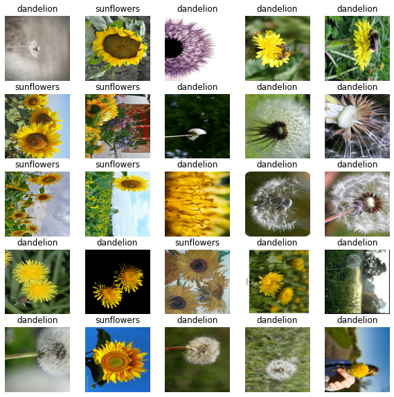
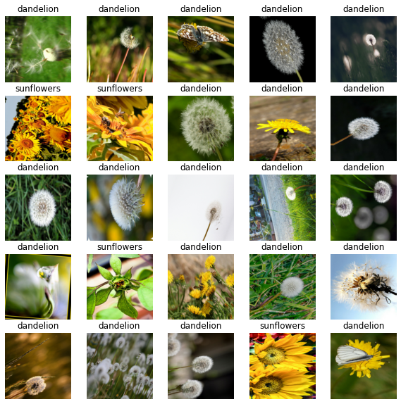
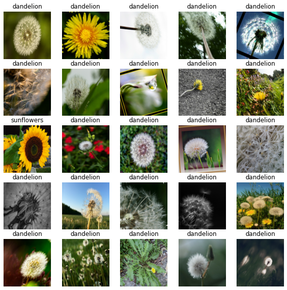

# Get the flowers dataset
flowers = tf.keras.utils.get_file(
'flower_photos',
'https://storage.googleapis.com/download.tensorflow.org/example_images/flower_photos.tgz',
untar=True)Data augmentation is a favorite recipe among deep learning practitioners especially for the ones working in the field of computer vision. Data augmentation is a technique used for introducing variety in training data thereby helping to mitigate overfitting.
When using Keras for training image classification models, using the ImageDataGenerator class for handling data augmentation is pretty much a standard choice. However, with TensorFlow, we get a number of different ways we can apply data augmentation to image datasets. In this tutorial, we are going to discuss three such ways. Knowing about these different ways of plugging in data augmentation in your image classification training pipelines will help you decide the best way for a given scenario.
Here’s a brief overview of the different ways we are going to cover:
- Using the standard ImageDataGenerator class
- Using TensorFlow image ops with a TensorFlow dataset
- Using Keras’s (experimental) image processing layers
- Mix-matching different image ops & image processing layers
Let’s get started!
Experimental setup
We are going to use the flowers dataset to demonstrate the experiments. Downloading the dataset is just as easy as executing the following line of code:
flowers contains the path (which in my case is - /root/.keras/datasets/flower_photos) where the dataset got downloaded. The structure of the dataset looks like so -
├── daisy [633 entries]
├── dandelion [898]
├── roses [641]
├── sunflowers [699 entries]
├── tulips [799 entries]
└── LICENSE.txtUsing the standard ImageDataGenerator class For most of the scenarios, the ImageDataGenerator should be good enough. Its flexible API design is really to follow and it makes it easier to work with custom image datasets by providing meaningful high-level abstractions.
We instantiate the ImageDataGenerator class like so -
img_gen = tf.keras.preprocessing.image.ImageDataGenerator(
rescale=1./255,
rotation_range=30,
horizontal_flip=True)We specify two augmentation operations and a pixel rescaling operation in there. ImageDataGenerator comes with a handy flow_from_directory method that allows us to read images from a directory and apply the specified operations on the fly during the time of training. Here’s how to instruct the img_gen object to read images from a directory -
IMG_SHAPE = 224
BATCH_SIZE = 32
img_flow = img_gen.flow_from_directory(flowers,
shuffle=True,
batch_size=BATCH_SIZE,
target_size=(IMG_SHAPE, IMG_SHAPE))Found 3670 images belonging to 5 classes.We then verify the images and the labels and they are indeed parsed right -
images, labels = next(img_flow)
print(images.shape, labels.shape)
show_batch(images, labels)(32, 224, 224, 3) (32, 5)
Training with an ImageDataGenerator instance is extremely straight-forward -
model = get_training_model()
model.fit(img_flow, ...)For a fully worked out example, refer to this tutorial.
As can be seen in this blog post, ImageDataGenerator’s overall data loading performance can have a significant effect on how fast your model trains. To tackle situations, where you need to maximize the hardware utilization without burning unnecessary bucks, TensorFlow’s data module can be really helpful (comes at some costs).
TensorFlow image ops with tf.data APIs
The blog post I mentioned in the previous section shows the kind of performance boost achievable with tf.data APIs. But it’s important to note that boost comes at the cost of writing boilerplate code which makes the overall process more involved. For example, here’s how you would load and preprocess your images and labels -
def parse_images(image_path):
# Load and preprocess the image
img = tf.io.read_file(image_path) # read the raw image
img = tf.image.decode_jpeg(img, channels=3) # decode the image back to proper format
img = tf.image.convert_image_dtype(img, tf.float32) # scale the pixel values to [0, 1]
img = tf.image.resize(img, [IMG_SHAPE, IMG_SHAPE]) # resize the image
# Parse the labels
label = tf.strings.split(image_path, os.path.sep)[5]
return (img, label)You would then write a separate augmentation policy with the TensorFlow Image ops -
def augment(image, label):
img = tf.image.rot90(image)
img = tf.image.flip_left_right(img)
return (img, label)To chain the above two together you would first create an initial dataset consisting of only the image paths -
image_paths = list(paths.list_images(flowers))
list_ds = tf.data.Dataset.from_tensor_slices((image_paths))Now, you would read, preprocess, shuffle, augment, and batch your dataset -
AUTO = tf.data.experimental.AUTOTUNE
train_ds = (
list_ds
.map(parse_images, num_parallel_calls=AUTO)
.shuffle(1024)
.map(augment, num_parallel_calls=AUTO) # augmentation call
.batch(BATCH_SIZE)
.prefetch(AUTO)
)num_parallel_calls allows you to parallelize the mapping function and tf.data.experimental.AUTOTUNE lets TensorFlow decide the level of parallelism to use dynamically (how cool is that?). prefetch allows loading in the next batch of data well before your model finishes the current epoch of training. It is evident that this process is more involved than the previous one.
Verifying if we constructed the data input pipeline correctly is a vital step before you feed your data to the model -
image_batch, label_batch = next(iter(train_ds))
print(image_batch.shape, label_batch.shape)
show_batch(image_batch.numpy(), label_batch.numpy(), image_data_gen=False)(32, 224, 224, 3) (32,)
The “b”s appear before the class labels because TensorFlow parses the strings as byte-strings. Using train_ds with your model is also just about executing -
model = get_training_model()
model.fit(train_ds, ...)Here you can find a fully worked out example. Here you can know more about the different performance considerations when using tf.data. There are more image ops available with TensorFlow Addons which can found here.
Recently, Keras introduced image_dataset_from_directory function (only available in tf-nightly at the time of writing this) which takes care of many of the boilerplate code we saw above and still yields pretty good performance. Here’s a tutorial that shows how to use it.
Keras has also introduced a number of image processing layers which can be very useful to build flexible augmentation pipelines using the Sequential API. In the next section, let’s see how.
Using Keras’s (experimental) image processing layers
Just like you would construct an entire model using the Sequential API, you can now construct very flexible data augmentation pipelines using the newly introduced (although experimental at the time of writing this) image processing layers. If we were to convert the data augmentation operations we have been following in the tutorial so far, building a data augmentation pipeline using this approach would be like so -
data_augmentation = tf.keras.Sequential([
tf.keras.layers.experimental.preprocessing.RandomFlip('horizontal'),
tf.keras.layers.experimental.preprocessing.RandomRotation(0.3)
])Before passing your data through this stack of layers makes sure you haven’t applied any augmentation already. So, it’s safe to create a separate TensorFlow dataset without mapping the augmentation function like we previously did -
# Create TensorFlow dataset without any augmentation
train_ds = (
list_ds
.map(parse_images, num_parallel_calls=AUTO)
.shuffle(1024)
.batch(BATCH_SIZE)
.prefetch(AUTO)
)Now, we can see how to examine some of the augmented images that would come out of this mini pipeline -
image_batch, label_batch = next(iter(train_ds))
plt.figure(figsize=(10, 10))
for n in range(25):
ax = plt.subplot(5, 5, n+1)
augmented_image = data_augmentation(tf.expand_dims(image_batch[n], 0))
plt.imshow(augmented_image[0].numpy())
plt.title(label_batch[n].numpy().decode("utf-8"))
plt.axis('off')
We can also make use of Python lambdas to map data_augmentation directly to our tf.data pipeline like so:
train_ds = (
list_ds
.map(parse_images, num_parallel_calls=AUTO)
.shuffle(1024)
.batch(BATCH_SIZE)
.map(lambda x, y: (data_augmentation(x), y),
num_parallel_calls=AUTO)
.prefetch(AUTO)
)Note that these layers can be also added as a part of your model allowing them to run on GPUs. Based on your compute budget you should decide if you would want to run these layers on the GPU or you would rather have them executed separately on the CPU.
A functional model definition in Keras using this approach may look like so -
# You define an input layer with pre-defined shapes
inputs = keras.Input(shape=(IMG_SHAPE, IMG_SHAPE, 3))
x = data_augmentation(inputs) # Apply random data augmentation
x = feature_extractor_model(x, training=False)
x = GlobalAveragePooling2D()(x)
x = Dropout(0.2)(x)
outputs = Dense(1)(x)
model = Model(inputs, outputs)Now, model should be good to go with - model.fit(train_ds, ...). A fully worked out example is available here. Note that, performance might get slightly affected when going with this approach since the GPUs will be utilized to run the preprocessing layers as well.
Let’s now think about situations where we may need to use a combination of the image ops of TensorFlow and the layers we just saw. What if we need to plug in custom augmentation operations in the augmentation pipeline? Added on top of it, what if we need to fix the probability at which the augmentation operations would get applied? Data augmentation pipelines are quite central behind the success of recent works like SimCLR, Augmix, etc.
Note
These layers have pre-defined inference-time behaviour. So even if you have included them inside your model itself, it’s totally fine. But if you want them during inference, you would need to set its inference-time behaviour.
Towards more complex augmentation pipelines
In this final approach, we will see how to mix and match between the different stock image ops, and stock image processing layers. Let’s first define a class utilizing the stock image ops with a utility function to apply them at random with a pre-defined probability.
class CustomAugment(object):
def __call__(self, image):
# Random flips and grayscale with some stochasticity
img = self._random_apply(tf.image.flip_left_right, image, p=0.6)
img = self._random_apply(self._color_drop, img, p=0.9)
return img
def _color_drop(self, x):
image = tf.image.rgb_to_grayscale(x)
image = tf.tile(x, [1, 1, 1, 3])
return x
def _random_apply(self, func, x, p):
return tf.cond(
tf.less(tf.random.uniform([], minval=0, maxval=1, dtype=tf.float32),
tf.cast(p, tf.float32)),
lambda: func(x),
lambda: x)_random_apply is taken from the official SimCLR repository. Now, in order to tie it together with the stock image processing layers, we can still use the Sequential API with a Lambda layer -
# Build the augmentation pipeline
data_augmentation = tf.keras.Sequential([
tf.keras.layers.Lambda(CustomAugment()),
tf.keras.layers.experimental.preprocessing.RandomRotation(0.1)
])When we verify if it’s indeed correct, we get desired outputs -
image_batch, label_batch = next(iter(train_ds))
plt.figure(figsize=(10, 10))
for n in range(25):
ax = plt.subplot(5, 5, n+1)
augmented_image = data_augmentation(tf.expand_dims(image_batch[n], 0))
plt.imshow(augmented_image[0].numpy())
plt.title(label_batch[n].numpy().decode("utf-8"))
plt.axis('off')
Training models when using this approach remains the same as the previous one. Keep in mind that performance can get affected when using this approach.